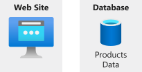
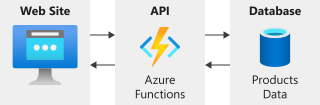
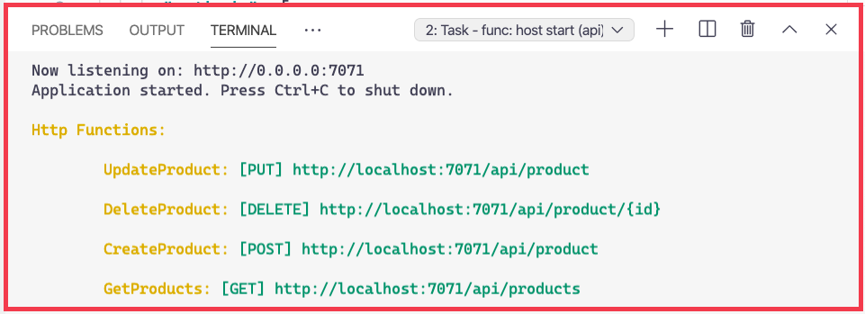

Serverless Computing, FaaS, Azure Functions
What is Azure?
Azure is a continually expanding set of cloud services that help your organization meet your current and future business challenges.
Azure gives you the freedom to build, manage, and deploy applications on a massive global network using your favorite tools and frameworks.
What does Azure offer?
Be ready for the future: Continuous innovation from Microsoft supports your development today and your product visions for tomorrow.
Build on your terms: You have choices. With a commitment to open source, and support for all languages and frameworks, you can build how you want and deploy where you want to.
Operate hybrid seamlessly: On-premises, in the cloud, and at the edge--we'll meet you where you are. Integrate and manage your environments with tools and services designed for a hybrid cloud solution.
Trust your cloud: Get security from the ground up, backed by a team of experts, and proactive compliance trusted by enterprises, governments, and startups.
How does Azure work?
-
Azure uses a technology known as virtualization:
- Virtualization separate.
- Hypervisor emulates.
- Repeat virtualisation.
- Servers connectivity.
- Orchestrator's Web API.
- Web API tools.
- Easy build, deploy, manage.
Azure services

-
Most commonly used categories:
- Compute
- Networking
- Storage
- Mobile
- Databases
- Web
- Internet of Things (IoT)
- Big data
- AI
- DevOps
Explore Azure functions
Azure Functions can serve many purposes in an application's design. Functions can be written in many common programming languages, such as: C#, Python, JavaScript, Typescript, Java, and PowerShell.
- Azure Functions scales automatically.
- An Azure function is a stateless environment.
- Azure Functions can perform orchestration tasks.
- The Azure Functions solution is ideal when you're concerned only with the code.
How can rapidly build HTTP APIs for your web apps without the headache of web frameworks?
What is an API? Why we need an API?
Product Manager application before implement Azure Function:
Let created the API, with Azure, that allows the front end and the back end to safely communicate.
The Product Manager Application will look like this:

Notice, that the API in project usually may contains:
CreateProduct,
DeleteProduct
and UpdateProduct functions.
API will connect to that database via a database "connection string".
Store connection strings in Azure Functions
In project which has a local.settings.json file. We can see property called "CONNECTION_STRING", the connection string to your database.
{"IsEncrypted": false,
"Values": {
"AzureWebJobsStorage": "",
"FUNCTIONS_WORKER_RUNTIME": "node",
"CONNECTION_STRING": "AccountEndpoint=https://some-link.documents.azure.com:443/;
AccountKey=some_account_key;"
}
}
Azure Functions routes HTTP
By default, any HTTP trigger function will respond to GET and POST requests. It also sets the URL of your function. Both of these things are configurable.
{ "bindings": [
{ "authLevel": "function",
"type": "httpTrigger",
"direction": "in",
"name": "req",
"methods": ["get", "post"],
"route": "products"
}, {
"type": "http",
"direction": "out",
"name": "res"
}
],
"scriptFile": "../dist/GetProducts/index.js"}
Time to Make functions RESTful
- Open the api/GetProducts/function.json file.
- Modify the "methods" property so that it only contains the value "get"
{"bindings": [
{ "authLevel": "function",
"type": "httpTrigger",
"direction": "in",
"name": "req",
"methods": ["get"],
"route": "products"
},{
"type": "http",
"direction": "out",
"name": "res"
}
],
"scriptFile": "../dist/GetProducts/index.js"}
Make the CreateProduct function RESTful
- Open the api/CreateProduct/function.json file.
- Restrict the allowed "methods" to just "post".
{ "bindings": [
{ "authLevel": "function",
"type": "httpTrigger",
"direction": "in",
"name": "req",
"methods": ["post"],
"route": "product"
},{
"type": "http",
"direction": "out",
"name": "res"
}
],
"scriptFile": "../dist/CreateProduct/index.js"}
Make the UpdateProduct function RESTful
- Open the api/UpdateProduct/function.json file.
- Restrict the allowed "methods" to just "put".
{"bindings": [
{ "authLevel": "function",
"type": "httpTrigger",
"direction": "in",
"name": "req",
"methods": ["put"],
"route": "product"
}, {
"type": "http",
"direction": "out",
"name": "res"
}
],
"scriptFile": "../dist/UpdateProduct/index.js"}
Make the DeleteProduct function RESTful
- Open the api/DeleteProduct/function.json file.
- Restrict the allowed "methods" to just "delete".
{"bindings": [
{ "authLevel": "function",
"type": "httpTrigger",
"direction": "in",
"name": "req",
"methods": ["delete"],
"route": "product/{id}"
}, {
"type": "http",
"direction": "out",
"name": "res"
}
],
"scriptFile": "../dist/DeleteProduct/index.js"}
Notice that the URLs for a function endpoints are now different.
Notice how you specified the same exact same route for the CreateProduct, UpdateProduct, and DeleteProduct functions. Only the HTTP request method is different.
Configure CORS
Must have to tell the API that it's OK for the front-end application to call it. This is done with something called Cross-Origin Resource Sharing, or CORS.
- Open the api/local.settings.json file.
- Add a "Host" section below the "Values" property. Set the "CORS" value on "Host" to "*".
{ "IsEncrypted": false,
"Values": {
"AzureWebJobsStorage": "",
"FUNCTIONS_WORKER_RUNTIME": "node",
"CONNECTION_STRING": "PASTE YOUR CONNECTION STRING HERE"
},
"Host": {
"CORS": "*"
}
}
When we needed to build a solution that pulls code logic from an existing JS Windows service, we can choose Azure function.
As you can see how it's easy and successfully we are create HTTP endpoints with Azure function. And configure it with CORS.